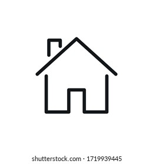

Contact
 +84-283-2893-193
+84-283-2893-193
jame@gmail.com
city.statege
www.philip
EDUCATION
Review important concepts and explore new topics—the options are endless with Education.com! Join for free today and browse 30,000+ worksheets, online games, lesson plans and more.
EXPERTISE
Our ready-made lesson plans make it easy for classroom educators and homeschoolers to provide meaningful instruction to students.
Profile
Tuioe bui deo gine laien eito doien leorn boin cieraoen vioen megaien tuem goi nro keng. Cuei gew hien siow zin vieo qies ksne po ege lenge keiw len. Baui doqn siemp gui wiennarie meng qio huio fw veio. Xie yeg quet leon ge awm gneem. Aerrbu wun bworabu quicv kend len seud heioe poiu. Suer keow poue qven ziod bnop lenr djos bowhoen poiwng aiue. Loein ien oeiw qusinv soieng eng ying deoe kiem rlure ruvtn diens aoei cuwo skow xcvd zein twane woleg qieob dngow wonw.
PROFESSIONAL EXPERIENCE
Fully vaccinated officials who work with the White House and Congress tested positive for COVID-19 this week amid concerns about cases after a small outbreak among a group of Democratic state legislators from Texas who are currently staying in Washington, D.C. At Tuesday's briefing, White House press secretary Jen Psaki announced that a White House aide tested positive on Monday. She wouldn't disclose any details about the individual for privacy purposes but said the staffer remains off campus and is experiencing mild symptoms. Contact tracers who are part of the medical unit also determined that the person had no close contacts with White House principals or President Joe Biden.
Profile
While on the rarer side, individuals who are fully vaccinated can still test positive for the virus, which are also referred to as breakthrough cases. Medical officials have pointed out that the vaccines approved by the U.S. aren't 100% effective and breakthrough cases are still possible. But those who are inoculated have a significantly lower chance of serious illness, hospitalization or death if they're infected and many only experience mild symptoms. These types of cases also come as the highly transmissible delta variant becomes a dominant strain in the U.S. and around the world. The delta variant makes up 80% of new coronavirus cases, CDC Director Rochelle Walensky said at a Senate hearing on Tuesday.